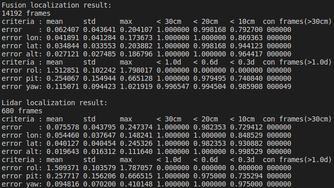

如何在本地运行多传感器融合定位模块
本文档提供了如何在本地运行多传感器融合定位模块的方法。
1. 事先准备
- 从GitHub网站下载Apollo源代码
- 按照教程设置Docker环境
- 从Apollo数据平台下载多传感器融合定位demo数据包（仅限美国地区），使用其中apollo3.5文件夹下的数据。
此定位数据为实验性质的demo数据，用于验证定位模块的可用性。数据主要包含定位地图(local_map/), 车辆参数(params/), 传感器数据(records/)。具体属性如下：
时长：5分钟
里程：3km
场景：Sunnyvale 城市道路
天气：晴天
2. 编译apollo工程
2.1 构建docker容器
我们提供了一个叫做dev-latest的docker镜像，docker容器会将你本地的apollo工程挂载到 /apollo 。
bash docker/scripts/dev_start.sh
2.2 进入docker容器
bash docker/scripts/dev_into.sh
2.3 编译工程
# To make sure you start clean
bash apollo.sh clean
# Build the full system
bash apollo.sh build_opt
注意: 如果你的电脑比较慢，你可以通过以下命令限制编译消耗的资源。
bash apollo.sh build --local_resources 2048,1.0,1.0
3. 配置定位模块
为了使定位模块正确运行，需要对地图路径和传感器外参进行配置。假设下载的定位数据的所在路径为DATA_PATH。
在进行以下步骤前，首先确定你在docker容器中。
3.1 配置传感器外参
将定位数据中的传感器外参拷贝至指定文件夹下。
cp -r DATA_PATH/params/* /apollo/modules/localization/msf/params/
文件夹中各个外参的意义 - ant_imu_leverarm.yaml： 杆臂值参数，GNSS天线相对Imu的距离 - velodyne128_novatel_extrinsics.yaml： Lidar相对Imu的外参 - velodyne128_height.yaml： Lidar相对地面的高度
3.2 配置地图和参数路径
在/apollo/modules/localization/conf/localization.conf中配置地图和参数的路径
# Redefine the map_dir in global_flagfile.txt
--map_dir=DATA_PATH
# The pointcloud topic name.
--lidar_topic=/apollo/sensor/lidar128/compensator/PointCloud2
# The lidar extrinsics file
--lidar_extrinsics_file=/apollo/modules/localization/msf/params/velodyne_params/velodyne128_novatel_extrinsics.yaml
这将会覆盖global_flagfile.txt中的默认值。
4. 运行多传感器融合定位模块
cyber_launch start /apollo/modules/localization/launch/msf_localization.launch
在/apollo/data/log目录下，可以看到定位模块输出的相关log文件。
- localization.INFO : INFO级别的log信息
- localization.WARNING : WARNING级别的log信息
- localization.ERROR : ERROR级别的log信息
- localization.out : 标准输出重定向文件
- localizaiton.flags : 启动localization模块使用的配置
5. 播放演示record文件
cd DATA_PATH/records
cyber_recorder play -f record.*
从播放数据到定位模块开始输出定位消息，大约需要50s左右时间。
6. 记录并可视化定位结果（可选）
记录定位结果
python /apollo/scripts/record_bag.py --start
该脚本会在后台运行录包程序，并将存放路径输出到终端上。
可视化定位结果
运行可视化工具
cyber_launch start /apollo/modules/localization/launch/msf_visualizer.launch
该可视化工具首先根据定位地图生成用于可视化的缓存文件，存放在/apollo/cyber/data/map_visual目录下。
然后接收以下topic并进行可视化绘制。
- /apollo/sensor/lidar128/compensator/PointCloud2
- /apollo/localization/msf_lidar
- /apollo/localization/msf_gnss
- /apollo/localization/pose
可视化效果如下

注意: 在定位模块正常工作之后(/apollo/localization/pose开始输出消息)，可视化模块才会弹出显示窗口。可以用/cyber_monitor命令查看topic情况。
7. 结束运行定位模块
退出定位程序和播包程序,如果有运行步骤6的录包脚本，需执行以下命令关闭后台录包程序。
python /apollo/scripts/record_bag.py --stop
8. 验证定位结果（可选）
假设步骤6中录取的数据存放路径为OUTPUT_PATH，杆臂值外参的路径为ANT_IMU_PATH
运行脚本
/apollo/scripts/msf_local_evaluation.sh OUTPUT_PATH
该脚本会以RTK模式的定位结果为基准，与多传感器融合模式的定位结果进行对比。
注意:
(注意只有在GNSS信号良好，RTK定位模式运行良好的区域，这样的对比才是有意义的。)
获得如下统计结果：

可以看到两组统计结果，第一组是组合导航(输出频率200hz)的统计结果，第二组是点云定位(输出频率5hz)的统计结果。
表格中各项的意义， - error： 平面误差，单位为米 - error lon： 车前进方向的误差，单位为米 - error lat： 车横向方向的误差，单位为米 - error roll： 翻滚角误差，单位为度 - error pit： 俯仰角误差，单位为度 - error yaw： 偏航角误差，单位为度 - mean： 误差的平均值 - std： 误差的标准差 - max： 误差的最大值 - <30cm： 距离误差少于30cm的帧所占的百分比 - <1.0d： 角度误差小于1.0d的帧所占的百分比 - con_frame()： 满足括号内条件的最大连续帧数